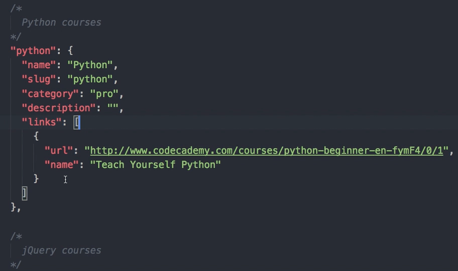
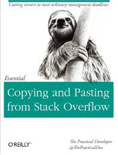

NYU Introduction to Python
06/06/2018Middle School Dance Rules Apply
Macs sit with MacsPCs sit with PCs
Agenda
- Welcome
- Introductions
- Walkthrough the Syllabus
- Norms
- Markdown Activity
- Git and GitHub
- Enviornment Set Up
- Pair Programming
- Advice for Learning How to Code
What We Will Accomplish by the End of Class
You will have your environment set up to write code in Python3, written code in markdown, made your first commit on GitHub, made your first pull request, helped create the norms for our class and get to know each other.Introductions
- Name
- Brief one sentance bio
- Favorite movie
Teaching Style
What should I expect from each class?How will each class be structured?
I do, we do, you do.Where can I go to get materials for the class?
Go to the GitHub repository for all the latest infomation.Let's look at the Syllabus
Class Norms
What do we expect from this class?What's the deal with Homework?
A sample game
Let's play one I made once.What topics will we cover?
We'll be building a strong foundation so that we can write Python on a regular basis.I've already gotten started writing code... this is too easy
If the material comes easy for you use this as an opertunity to help a neighbor out. We'll all have times that this happens to us.OMG This is so hard
That's okay, don't be asshamed to ask questions.We are going to make mistakes
That's the best part of prgramming.So I want to be a Data Scientist?

A note on learning how to code in 2018
What is a programmer?
Someone who commits code to code base.When do I get to call myself one?
In the next half hour, that will be all of us!So I saw we aren't writing Python tonight? What's that about?
We'll be getting there pretty soon.What is Git?
What is GitHub?

What is Open Source?
Markdown Activity
We'll use code to introduce ourselves further.Step 1
Let's set up our GitHub profilesStep 2
Fork the repositoryStep 3
Add a file called your_name.mdStep 4
Check out how I did mineStep 5
Commit your codeStep 6
Submit a pull requestSo wait what just happened?
Let's review what is Git and GitHub.Getting our Enviornment Set Up
We'll be spending some time in class setting up our environment to make sure we have what we needPair Programming
We'll create a new repository and commit to it.How did it go?
Let's discuss how this went. What worked? What didn't work?Just Google It...
We'll learn how to google the right answers.Stack Overflow?
Advice on Learning How to Code
Feel free to ask any questions on how to learn how to code.Next Class
We'll focus on the command line and writing our first program. We will also continue setting up our programming enviornments and start with Python.Questions?
Ask me anything.How to Contact Me
Email is best.jlg17@nyu.edu
jessica.garson@gmail.com
301 704 1328